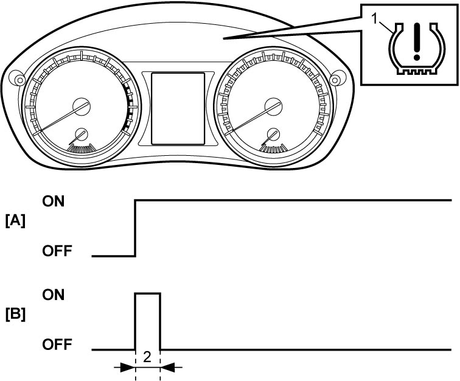
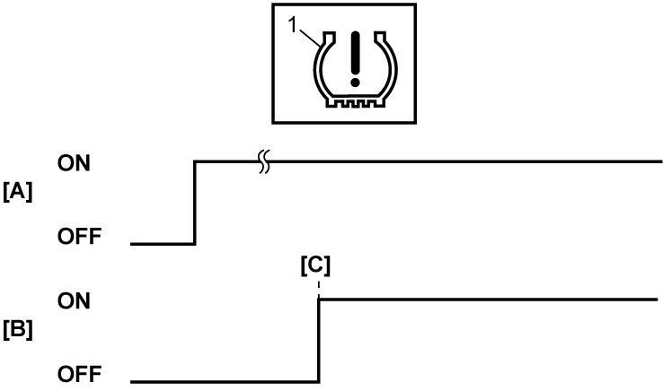
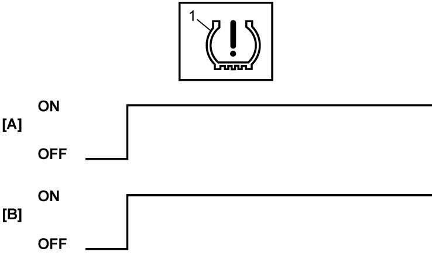
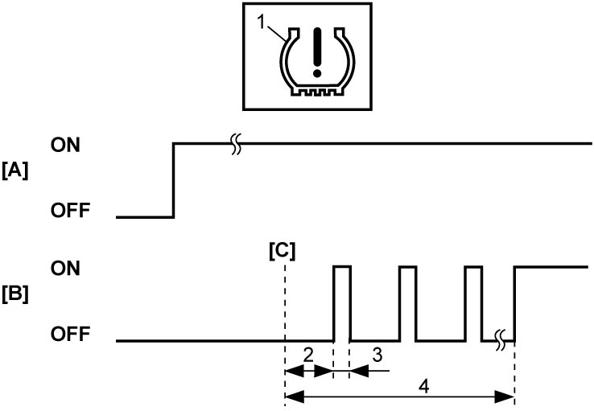

10D
| TPMS Self-Diagnosis Function |
TPMS control module diagnoses conditions of TPMS component parts (whether or not there is any abnormal condition) all the time and indicates the results (warning of abnormal condition occurrence) through low tire pressure warning light as described.
For details of the low tire pressure warning light operation as the warning function, refer to DTC Table.
•When ignition is “ON”, low tire pressure warning light (1) lights up for 2 seconds to check the warning light and circuit.
When no abnormal condition has been detected, low tire pressure warning light turns off after 2 seconds.

•When TPMS control module receives a signal indicating the tire pressure and judges it as lower than the specified value, it causes low tire pressure warning light (1) to light up and stores the DTC in its EEPROM.
•When tire pressure sensor ID code is not registered in TPMS control module, it causes low tire pressure warning light (1) to light up and stores the DTC in its EEPROM.
•When TPMS control module detects any abnormal condition in the system, it turns on low tire pressure warning light (1) after it blinks for 75 seconds and stores the DTC in its EEPROM.
When no abnormal condition has been detected, low tire pressure warning light turns off after 2 seconds.
NOTE:
Low tire pressure warning light does not light up in some DTCs even if any malfunctions are detected. In such cases, low tire pressure warning light lights up for 2 seconds and turns off.

 "Expand image")
| [A]: | Ignition |
| [B]: | Low tire pressure warning light operation for light check |
| 2. | 2 seconds |

 "Expand image")
| [A]: | Ignition |
| [B]: | Low tire pressure warning light operation when TPMS control module detects tire pressure is lower than specification |
| [C]: | When malfunction is detected |

 "Expand image")
| [A]: | Ignition |
| [B]: | Low tire pressure warning light operation when tire pressure sensor ID code is not registered |

 "Expand image")
| [A]: | Ignition |
| [B]: | Low tire pressure warning light operation when TPMS malfunction occurs |
| [C]: | When malfunction is detected |
| 2. | 3 seconds |
| 3. | 1 second |
| 4. | 75 seconds |